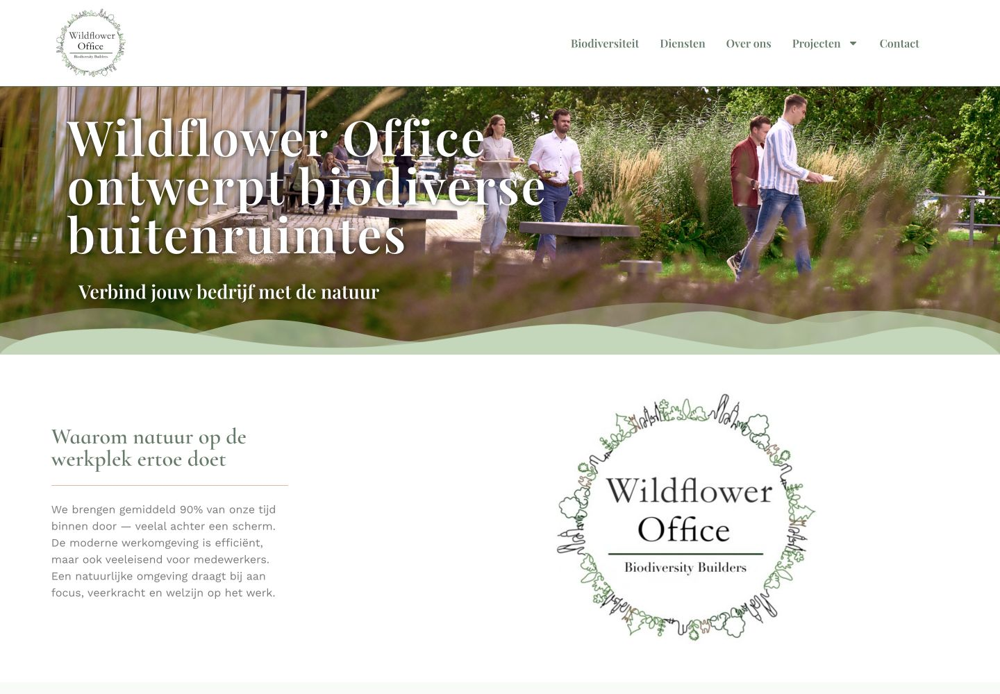
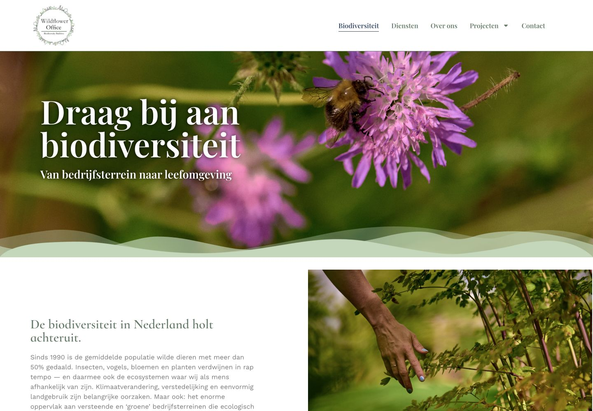
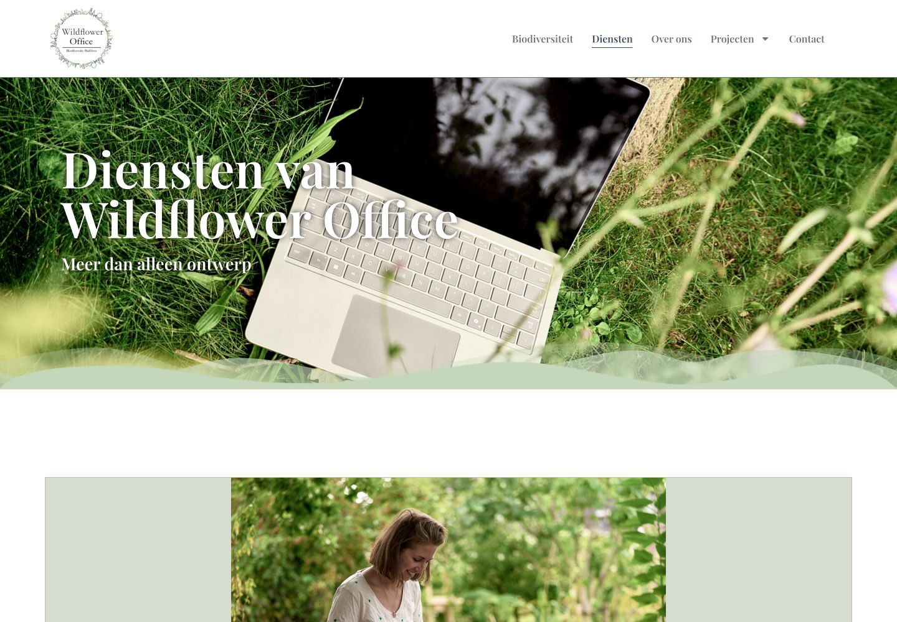

Case
Wildfloweroffice
Voor Wildfloweroffice bracht ik inhoud, volgorde en uitstraling samen in een rustige website. De opbouw blijft op desktop en mobiel herkenbaar en kan per pagina worden bijgehouden.



Vraag
Natuur op de werkplek en de diensten hadden samen één volgorde nodig
Bezoekers moesten direct begrijpen wat Wildfloweroffice doet, met genoeg ruimte voor natuur op de werkplek en de verschillende diensten. Tegelijk moest de inhoud eenvoudig bij te werken zijn en op desktop en mobiel dezelfde logische volgorde houden.
Aanpak
Eerst is bepaald wat iemand bij binnenkomst moet weten, waar verdieping nodig is en wanneer de diensten in beeld komen. Opmaak en inhoud volgen die lijn met rustige overgangen. Op kleinere schermen blijft dezelfde volgorde herkenbaar.
Oplossing
De homepage zet de hoofdlijn neer; aparte pagina's werken natuur op de werkplek en de diensten verder uit. Informatie kan zo op de bedoelde plek worden aangepast zonder de volledige homepage opnieuw op te bouwen.
Uitkomst
Een vaste route door verhaal en beheer
Bezoekers vinden vanuit de homepage de juiste verdieping. Wildfloweroffice houdt de inhoud bij binnen een vaste, overzichtelijke opbouw.
Herkenbaar?
Staat alle informatie online, maar ontbreekt een vaste volgorde?
Ik kijk met je mee naar de volgorde van je verhaal en wat werkbaar moet blijven in het beheer.